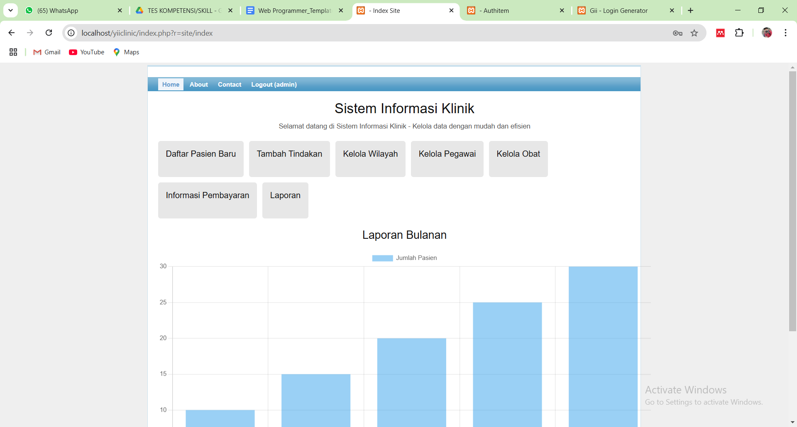
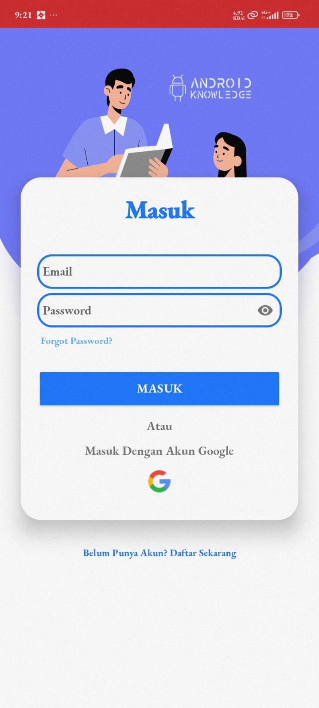

WEB APP
01
Aplikasi Klinik
Aplikasi web untuk membantu pengelolaan data dan proses operasional klinik.
PHPCodeIgniter 4MySQL
Lihat proyek
Saya Iqbal Nur Asyegap — Operator IT & Pengembang Backend yang fokus pada web application, database, academic systems, dan problem solving.
Beberapa proyek yang menunjukkan pengalaman saya dalam membangun, memperbaiki, dan mengembangkan sistem sesuai kebutuhan.

WEB APPAplikasi web untuk membantu pengelolaan data dan proses operasional klinik.

ANDROIDAplikasi Android untuk membantu mencari donor darah terdekat berdasarkan perhitungan jarak.
system.solve(problem);
Pengembangan dan pemeliharaan modul SIAKAD, pengelolaan data PDDIKTI, serta kebutuhan sistem akademik.
Bukan sekadar daftar teknologi. Saya memilih teknologi berdasarkan kebutuhan sistem dan masalah yang ingin diselesaikan.
Saya merupakan lulusan S1 Teknik Informatika yang bekerja di bidang operasional IT dan pengembangan sistem. Pekerjaan saya berada di titik temu antara teknologi, data, dan kebutuhan pengguna.
Saya terbiasa menangani SIAKAD, PDDIKTI, database, debugging, serta pengembangan fitur sesuai kebutuhan operasional. Di sisi development, saya terus memperdalam backend development dengan PHP, Laravel, dan CodeIgniter, sambil mengeksplorasi Python.
Akademi Kebidanan Isma Husada Cirebon
SIAKAD • PDDIKTI • Basis Pengolahan Data • Web • Sistem Akademik
Laravel • CodeIgniter 4 • MySQL • Python
Membangun aplikasi yang dapat digunakan dan terus meningkatkan kemampuan pengembangan perangkat lunak.
Universitas Nahdlatul Ulama Cirebon
Pengembangan perangkat lunak, basis data, aplikasi mobile, dan sistem informasi.
Untuk kebutuhan sistem, pengembangan website, pekerjaan teknis, kolaborasi, atau diskusi teknologi, silakan hubungi saya.
iqbalnurasyegap009@gmail.com